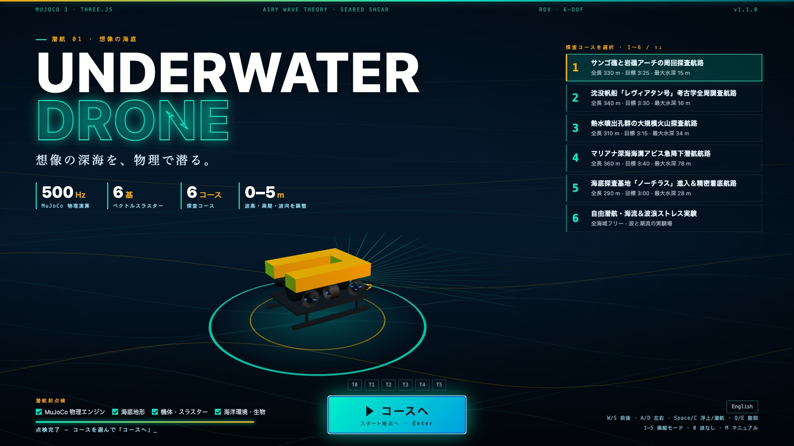

01
表紙 — 潜航前点検とコース選択
起動すると、海底の等深線の上で機体がゆっくり回り、前方ソナーの扇が掃引する表紙が現れます。物理エンジンの読み込みは「潜航前点検」としてチェックリストに。6 つのコースから選んで「コースへ」を押すと、T0〜T5 のスラスターが順に始動し、機体はスタート地点で待機します。
- 3D 機体のターンテーブル
- キー 1〜6 でコース選択
- START を押すまで機体は停止